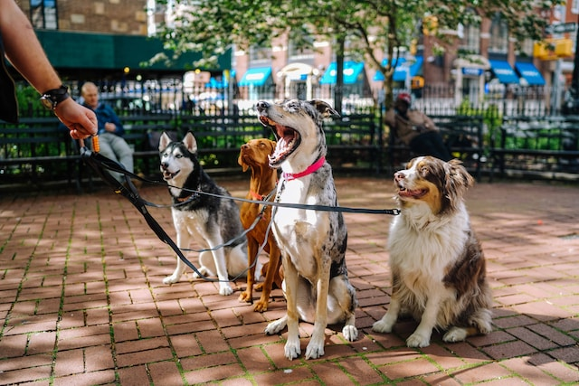

| Wineries and Restaurants | There are more than 55 wineries to choose from - offering cellar door sales, restaurants, cafes, and tours. Along the way, discover a foodies paradise. Meet the growers, producers, providers, and chefs. Experience the fun of picking your own produce or buying dinner ingredients at the farm gate. Dine with views of the sea, lakes, and vineyards. |
| Golf | The Mornington Peninsula is blessed with 19 courses that both challenge and excite. Many golf courses provide the most exhilarating views over Port Phillip Bay, Western Port, and Bass Strait. The sand hills and coastal hinterland provide wonderful examples of links, resort, and traditional courses. Visitors are always welcome. |
| Peninsula Hot Springs | Another world awaits. Enjoy the thermal bathing area or book a private indoor or outdoor hot springs bath experience. Activities include reflexology treatments, foot and hand baths, sauna, steam baths, cold plunges and yoga. The cafe at the bath house provides light meals and gourmet pizzas. Feel revitalised and relaxed at the same time. |
| Queenscliff-Sorrento Ferry | There's no better way to cross the Bay either with your car or as a foot passenger. It only takes 40 minutes. Spot the playful dolphins whilst enjoying a coffee and light refreshments. The ferries run every day of the year on the hour. Wonderful restaurants at historic Queenscliff on the Bellarine peninsula offer perfect lunchtime adventures. |
| Walking Tracks | Fabulous walking tracks in any direction for all ages. Beautiful beach walks, amazing cliff top strolls and for the more serious walkers, a 100km walk combines the Bay trial, National Parks and the two Bays walk through the hinterland. |
| Arts and Culture | The Mornington Peninsula hosts an array of exhibitions and galleries, featuring fine art, sculpture, ceramics, jewelry, hand-blown glass, and clothing. Small local galleries and craft markets are in abundance across the region. |
| Shopping Escapades | Lovely, leisurely shopping - for pure pleasure - is listed as the number one activity for holidaymakers. Sorrento and Mornington will not disappoint. Bookshops, giftware, home living, and of course the odd handbag or "must-have that" top is yours for the exploring. |
| Water Sports | Experience endless family fun at this picturesque destination. Enjoy the thrill of sailing, reel in the catch of the day with fishing, explore serene waters with kayaking and paddleboarding, discover vibrant marine life through snorkeling and scuba diving, and ride the waves while surfing. Don't miss the exciting beach cricket match! |
| Pet Friendly | We understand that pets are an important part of the family. We are pet friendly by arrangement - so please talk to us about your needs. We offer a fully enclosed backyard, shady trees, water bowls, food bowls, and a lead if you forget one. Only 3 minutes from a leash-free beach, an oval close by and if you want to sleep in we are happy to take your dog (depending on its size) for a walk in the morning. |
|  |